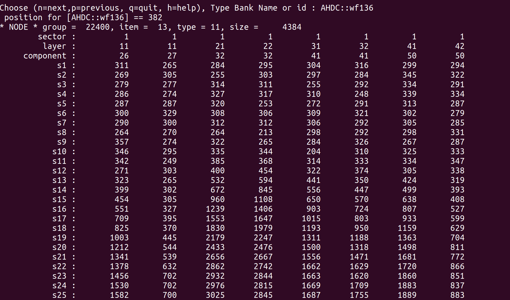
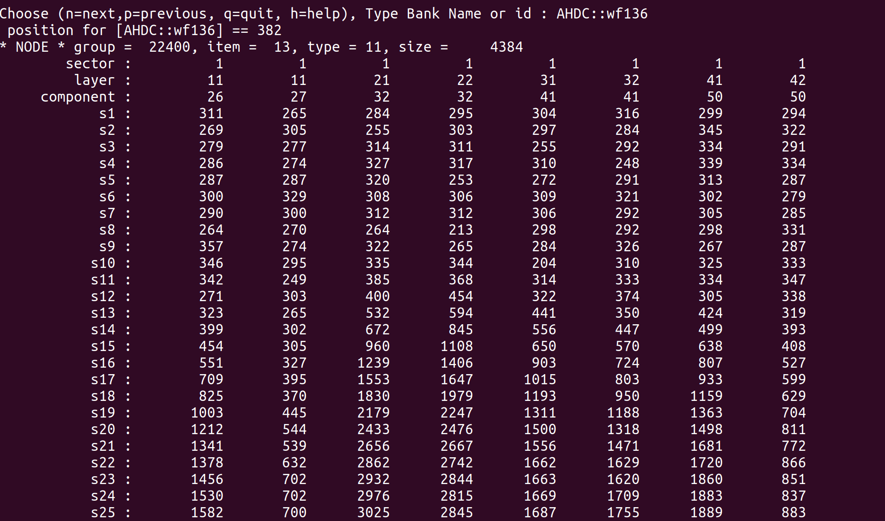

Introduction
This page is a documentation of my work related to the ALERT software. I work on the simulation of the AHDC signal. A description of the project and the results are accessible in Preparation of the ALERT experiment at JLab (see the project of September 2024).
The simulation is based on GEMC. The following lines describe the steps to run my code.

Configuration
The must simple way to run my code is to have access to the JLab ifarm. Here are some useful command lines :
ssh -XY username@scilogin.jlab.org
ssh -XY ifarm
To run the full simulation chain, we need to load the CLAS12 modules, ...
First use
This section concerns people that are not familiar with the software. For others, it is a prerequisite to expect the same results as mine. It is based on the official ALERT software wiki.
Preamble
If you have the correct right access, we recommend to create a new work space following these commande line :
cd /work/clas12/users/
mkdir yourjlabusername
cd yourjlabusername
Setup "default" CLAS12 software modules
Run these command lines :
module use /scigroup/cvmfs/hallb/clas12/sw/modulefiles
module load clas12
module switch gemc/dev
This set of commands can be added into your .login file in your home directory.
Setup GEMC
In your work space (/work/clas12/users/yourjlabusername), create a new repository named gemc
mkdir gemc
cd gemc
GEMC source
Now, clone my version of GEMC :
git clone git@github.com:ftouchte/gemc_source.git source
N.B: The repository has been renamed source.
If you don't have a ssh key, you will get an error. You can learn how to create one and add this in your GitHub account. Then you can re-use the same command. If you don't want to create a ssh key, you can use :
git clone https://github.com/ftouchte/gemc_source.git source
Now go inside the directory and compile gemc.
cd source
scons -j4
An executabe called gemc has been created.
GEMC detector
Go back in your working space (/work/clas12/users/yourjlabusername/gemc) and clone this repository:
git clone git@github.com:mpaolone/detectors.git detectors
or
git clone https://github.com/mpaolone/detectors.git detectors
Now go inside the directory
cd detectors/clas12/alert
and copy and paste the following lines in the terminal (line by line)
cd ../targets
./targets.pl config.dat
cd ../alert/ahdc
run-groovy factory.groovy --variation default --runnumber 11
run-groovy factory.groovy --variation rga_fall2018 --runnumber 11
./ahdc.pl config.dat
cd ../atof
run-groovy factory.groovy --variation default --runnumber 11
run-groovy factory.groovy --variation rga_fall2018 --runnumber 11
./atof.pl config.dat
cd ../external_shell_nonActif
./alertshell.pl config.dat
cd ../He_bag
./hebag.pl config.dat
cd ../
Run my code
At this step, everything is setup. Go in the directory where the geometry of the ALERT detector has been defined (yourpathto/gemc/detectors/clas12/alert)
Example of run :
/yourpathto/gemc/source/gemc alert.gcard -OUTPUT='hipo, ten_events.hipo' -N=10 -USE_GUI=0
Explanation :
-
/yourpathto/gemc/source/gemc is the executable that has been generated after compiling the gemc source code (
scons -j4) -
alert.gacrd is the configuration file that contains the geometry of the ALERT detector. It also allows to define the kind of particle to be generated, their initial position and momentum coordinates...
-
-OUTPUT='hipo, ten_events.hipo' sets the name of the output file. In this case, ten_events.hipo can be replace by myfilename.hipo.
-
-N=10 sets the number of events to be generated.
-
-USE_GUI=0 when this option is set to 1, a user interface appears.
Analysis
To view the content of the file on the ifarm, use hipo-utils
hipo-utils -dump ten-events.hipo
N.B : This command line is already available on the ifarm. To use it on a local computer, follow the instructions of HIPO Utilities JAVA.
Tips : In your equivalent .bashrc file, define this alias
alias hipo-utils="/yourpathto/bin/hipoutils.sh"


To go further, visit CLAS12 Software Center / Analysis
Tutorials
As it's much simple to learn from examples...
Generate a particle
Particle
The type of particle, the iniatial coordinates, momentum, ... are defined in a file called alert.gcard accessible in gemc/detectors/clas12/alert. Here is an example of such a file.
<gcard>
<!-- target. ALERT target -->
<detector name="../targets/target" factory="TEXT" variation="alert"/>
<!-- Implementation ATOF, ahdc -->
<detector name="atof/atof" factory="TEXT" variation="default"/>
<detector name="ahdc/ahdc" factory="TEXT" variation="default"/>
<detector name="./external_shell_nonActif/alertshell" factory="TEXT" variation="original"/>
<!-- He bag -->
<detector name="./He_bag/hebag" factory="TEXT" variation="original"/>
<!-- hall field -->
<option name="HALL_FIELD" value="clas12-newSolenoid"/>
<!-- fields, precise mode -->
<option name="FIELD_PROPERTIES" value="TorusSymmetric, 2*mm, G4ClassicalRK4, linear"/>
<option name="FIELD_PROPERTIES" value="clas12-newSolenoid, 1*mm, G4ClassicalRK4, linear"/>
<option name="INTEGRATEDRAW" value="*"/>
<option name="PHYSICS" value="STD + FTFP_BERT"/>
<option name="SAVE_ALL_MOTHERS" value="0"/>
<!-- beam conditions -->
<option name="BEAM_P" value="proton, 160*MeV, 90.0*deg, 0*deg"/>
<option name="SPREAD_P" value="90*MeV, 30.0*deg, 180*deg"/>
<option name="BEAM_V" value="(0, 0, 0)cm"/>
<option name="SPREAD_V" value="(0.0, 15.0)cm"/>
<!-- Run Number 11, picked up by digitization routines -->
<option name="RUNNO" value="11" />
<option name="DIGITIZATION_VARIATION" value="default" />
<option name="OUTPUT" value="hipo, out.hipo"/>
</gcard>
The part of interest is called beam conditions. With this configuration file, the software will generate proton with momentum \(p\) = 160 MeV oriented along \(\theta\) = 90° and \(\phi\) = 0°. In fact, no ! Indeed, due to the option SPREAD_P, the real values are uniform draws :
| parameters | values |
|---|---|
| \(p\) | 160 MeV ± 90 MeV |
| \(\theta\) | 90° ± 30° |
| \(\phi\) | 0° ± 180° |
This is the same logic for the position (BEAM_V and SPREAD_V). In other words :
<option name="BEAM_P" value="type_of_particle, p*MeV, theta*deg, phi*deg"/>
<option name="SPREAD_P" value="p*MeV, theta*deg, phi*deg"/>
<option name="BEAM_V" value="(x,y,z)cm"/>
<option name="SPREAD_V" value="(r=sqrt(x²+y²),z)cm"/>
Reference GEMC options. The following plot shows the momentum distribution of ten thousands particle generated in GEMC with the above alert.gcard. We can see that all the parameters are centered in the values defined in BEAM_P. The widths of the distributions correspond to the value defined in SPREAD_P.
N.B
- Use
./gemc -BEAM_P="show_all"to print the list of G4 supported particles.
| particle | pid |
|---|---|
| proton | 2212 |
| neutron | 2112 |
| alpha | 1000020040 |
| He3 | 1000020030 |
| triton | 1000010030 |
More
- What does the “variation” attribute in
<detector ...>represent?
<!-- target. ALERT target -->
<detector name="../targets/target" factory="TEXT" variation="alertHe"/>
<!-- Implementation ATOF, ahdc -->
<detector name="atof/atof" factory="TEXT" variation="default"/>
<detector name="ahdc/ahdc" factory="TEXT" variation="default"/>
<detector name="./external_shell_nonActif/alertshell" factory="TEXT" variation="original"/>
<!-- He bag -->
<detector name="./He_bag/hebag" factory="TEXT" variation="original"/>
It represents a specific configuration. These configurations are defined in @allconfs:
gemc/detectors/clas12/targets/targets.plgemc/detectors/clas12/alert/thisDet/thisDet.plwhere thisDet == {He_bag, ahdc or atof}
Add new entries in AHDC::adc
On the ifarm, we can see the content of an hipo file using :
hipo-utils -dump myfile.hipo
This figure shows a typical output. It displays the content of the AHDC::adc bank. In the following, we will see how to add a new entry.

Step 1
Go in /gemc/source/hitprocess/clas12/alert/ahdc_hitprcess.cc and modify the function ahdchitprocess::integrateDgtz().
map<string, double> ahdc_HitProcess::integrateDgt(MHit* aHit, int hitn) {
// starting part of the code
dgtz["hitn"] = hitn;
dgtz["sector"] = sector;
dgtz["layer"] = layer;
dgtz["component"] = component;
dgtz["ADC_order"] = 0;
dgtz["ADC_ADC"] = (int) output["max_value"]; // adc
dgtz["ADC_time"] = (float) output["t_ovr"]; // ns
dgtz["ADC_ped"] = (int) output["noise_level"]; // adc
dgtz["ADC_integral"] = (int) output["integral"]; // adc per 44 ns
dgtz["ADC_timestamp"] = (long) output["t_start"]; // ns
// MY NEW ENTRY
dgtz["ADC_newEntry"] = value_of_my_newEntry;
dgtz["TDC_order"] = 0;
dgtz["TDC_TDC"] = output["t_start"];
// remaining part of the code
return dgtz;
} // end of the funtion
Step 2
Go in gemc/source/output/hipoSchemas.cc and modify the function HipoSchema :: HipoSchema(). I add "newEntry/F" in alertAhdcchema.parse("..."). The letter "F" is the type of my new entry, it can be I, S, B, F, D, or L (there is a comment about them in the code, you can check check).
HipoSchema :: HipoSchema()
{
// starting part of the code
// detectors
alertAhdcADCchema.parse("sector/B, layer/B, component/S, order/B, ADC/I, time/F, ped/S, integral/I, timestamp/L, newEntry/F");
alertAhdcTDCchema.parse("sector/B, layer/B, component/S, order/B, TDC/I, ped/S");
alertAtofADCchema.parse("sector/B, layer/B, component/S, order/B, ADC/I, time/F, ped/S");
// remaining part of the code
}
Step 3 (can be skipped)
Nothing to do, just understanding what going on. During the simulation, there is a part dedicated to the recording of data in hipo files.
Look at gemc/source/output/hipo_output.cc
void hipo_output :: writeG4DgtIntegrated(outputContainer* output, vector<hitOutput> HO, string hitType, map<string, gBank> *banksMap) {...}
and gemc/source/output/gbank.cc
map <string, gBank> read_banks(goptions gemcOpt, map <string, string> allSystems) { ... }
Step 4
Update the database containing the bank definition. Go in gemc/detectors/clas12/alert/ahdc/bank.pl
insert_bank_variable(\%configuration, $bankname, "bankid", $bankId, "Di", "$bankname bank ID");
insert_bank_variable(\%configuration, $bankname, "sector", 1, "Di", "set to 0");
insert_bank_variable(\%configuration, $bankname, "layer", 2, "Di", "hipo layer is superlayer*10 + layer");
insert_bank_variable(\%configuration, $bankname, "component", 3, "Di", "wire number");
insert_bank_variable(\%configuration, $bankname, "ADC_order", 4, "Di", "set to 0");
insert_bank_variable(\%configuration, $bankname, "ADC_ADC", 5, "Di", "ADC integral from pulse fit");
insert_bank_variable(\%configuration, $bankname, "ADC_time" , 6, "Di", "adc time from pulse fit");
insert_bank_variable(\%configuration, $bankname, "ADC_ped" , 7, "Di", "pedestal from pulse analysis - currently set to doca");
insert_bank_variable(\%configuration, $bankname, "ADC_newEntry" , 8, "Dd", "this my new entry");
# insert_bank_variable(\%configuration, $bankname, "TDC_order", 4, "Di", "set to 0");
# insert_bank_variable(\%configuration, $bankname, "TDC_TDC", 5, "Di", "TDC integral from pulse fit");
# insert_bank_variable(\%configuration, $bankname, "TDC_ped" , 6, "Di", "pedestal from pulse analysis - currently set to doca");
insert_bank_variable(\%configuration, $bankname, "hitn", 99, "Di", "hit number");
This is the end. Now you have to go in your gemc/detectors/clas12/alert (the place where you run gemc).
cd ahdc
./ahdc.pl config.dat
cd ..
and run :
/yourpathto/gemc/source/gemc alert.gcard -OUTPUT='hipo, ten_events.hipo' -N=10 -USE_GUI=0
Creation of the AHDC::wf136 bank?
I wanted to create a new bank to save the digitized AHDC signal. I called it AHDC::wf136. wf refers "waveform" and 136 is the sampling number. (It is important to note that 136 is an abitrary number that should normally depends on (int) (tmax-tmin)/44ns. Here, the time windows is 6000 ns.)
The goal is to provide this digitized signal to the decoder in the reconstruction algorithm.
Step 1 (classic)
In gemc/source/hitprocess/clas12/alert/ahdc_hitprocess.cc, I added :
for (int itr=1;itr<=136;itr++){
std::ostringstream sEntry;
sEntry << "wf136_s" << itr;
dgtz[sEntry.str()] = (int) SDgtz.at(itr-1);
}
Step 2 (classic)
In gemc/detectors/clas12/alert/ahdc/bank.pl, I added these lines :
for my $itr (1..136) {
my $entry = "wf136_s$itr";
insert_bank_variable(\%configuration, $bankname, $entry,$itr+3, "Di", "Digitized AHDC siganl : sample n° $itr");
}
To update the database, in gemc/detectors/clas12/alert/ahdc, I run :
./ahdc.pl config.dat
Step 3 (less classic)
In gemc/source/output/hipoSchema.h, I declared :
class HipoSchema {
// ...
// detectors
hipo::schema alertAhdcWF136chema;
// ..
};
In gemc/source/output/hipoSchema.cc, I added :
// detectors
alertAhdcWF136chema = hipo::schema("AHDC::wf136",22400, 13); // <== this line !
// ...
// detectors
std::ostringstream ListOfAhdcWF136;
ListOfAhdcWF136 << "sector/B, layer/B, component/S";
for (int itr=1;itr<=136;itr++){
ListOfAhdcWF136 << ", s" << itr << "/I";
}
alertAhdcWF136chema.parse(ListOfAhdcWF136.str()); // <== this line !
// ...
schemasToLoad["AHDC::wf136"] = alertAhdcWF136chema; // <== this line !
// ...
Step 4 (very subtle)
The writting of the digitized bank is done in hipo_output::writeDgtIntegrated(...).
hitType is the name of the detector. For ALERT, hitType == "ahdc".
The line bellow extract the structure of the AHDC bank.
gBank dgtBank = getDgtBankFromMap(hitType, banksMap);
If you do a cout << dgtBank, you will got something like that :
======> Show dgtBank
>> Bank ahdc loaded with id 2 : ahdc bank ID
> Variable : sector id: 1 type: Di Description: set to 1
> Variable : layer id: 2 type: Di Description: hipo layer is superlayer*10 + layer
> Variable : component id: 3 type: Di Description: wire number
> Variable : ADC_order id: 4 type: Di Description: set to 1
> Variable : ADC_ADC id: 5 type: Di Description: ADC integral from pulse fit
> Variable : ADC_time id: 6 type: Dd Description: adc time from pulse fit
> Variable : ADC_ped id: 7 type: Di Description: pedestal from pulse analysis - currently set to noise level
> Variable : ADC_integral id: 8 type: Di Description: integral
> Variable : ADC_timestamp id: 9 type: Dd Description: currently set to t_start
> Variable : ADC_t_cfd id: 10 type: Dd Description: time from constant fraction discriminator
> Variable : ADC_mctime id: 11 type: Dd Description: mc time - weighted average with Edep
> Variable : ADC_nsteps id: 12 type: Di Description: nsteps
> Variable : ADC_mcEtot id: 13 type: Dd Description: mcEtot
> Variable : hitn id: 99 type: Di Description: hit number
> Variable : wf136_s1 id: 4 type: Di Description: Digitized AHDC siganl : sample n° 1
> Variable : wf136_s2 id: 5 type: Di Description: Digitized AHDC siganl : sample n° 2
> Variable : wf136_s3 id: 6 type: Di Description: Digitized AHDC siganl : sample n° 3
> Variable : wf136_s4 id: 7 type: Di Description: Digitized AHDC siganl : sample n° 4
> Variable : wf136_s5 id: 8 type: Di Description: Digitized AHDC siganl : sample n° 5
> Variable : wf136_s6 id: 9 type: Di Description: Digitized AHDC siganl : sample n° 6
> Variable : wf136_s7 id: 10 type: Di Description: Digitized AHDC siganl : sample n° 7
> Variable : wf136_s8 id: 11 type: Di Description: Digitized AHDC siganl : sample n° 8
> Variable : wf136_s9 id: 12 type: Di Description: Digitized AHDC siganl : sample n° 9
> Variable : wf136_s10 id: 13 type: Di Description: Digitized AHDC siganl : sample n° 10
> Variable : wf136_s11 id: 14 type: Di Description: Digitized AHDC siganl : sample n° 11
> Variable : wf136_s12 id: 15 type: Di Description: Digitized AHDC siganl : sample n° 12
> Variable : wf136_s13 id: 16 type: Di Description: Digitized AHDC siganl : sample n° 13
> Variable : wf136_s14 id: 17 type: Di Description: Digitized AHDC siganl : sample n° 14
> Variable : wf136_s15 id: 18 type: Di Description: Digitized AHDC siganl : sample n° 15
> Variable : wf136_s16 id: 19 type: Di Description: Digitized AHDC siganl : sample n° 16
> Variable : wf136_s17 id: 20 type: Di Description: Digitized AHDC siganl : sample n° 17
// etc...
At this step, I was confident with the fact that I could access my new bank. To continue, I just got inspire by the code already written. As AHDC::wf136 is neither of type adc nor tdc, I had to do some stuffs manually. So I extracted the schema and the bank like that :
// Specific to AHDC and AHDC::wf136
hipo::schema ahdcWF136Schema = (output->hipoSchema)->schemasToLoad["AHDC::wf136"];
hipo::bank ahdcWF136Bank(ahdcWF136Schema, HO.size());
//std::cout << "======> Show ahdcWF136Bank" << std::endl;
//ahdcWF136Bank.show(); // to have a preview the AHDC::wf136 // of course, at this step, all entries are set to 0
It remained to fill the bank when hitType == "ahdc" :
for(auto &bankName : dgtBank.orderedNames ) {
// ...
if(hasADCBank) {
// looping over the hits
for(unsigned int nh=0; nh<HO.size(); nh++) {
map<string, double> theseDgts = HO[nh].getDgtz();
for(auto &thisVar: theseDgts) {
// found data match to bank definition
if(thisVar.first == bname) {
string varType = dgtBank.getVarType(thisVar.first);
// sector, layer, component are common in adc/tdc so their names are w/o prefix
// sector, layers are "Bytes"
if(bname == "sector" || bname == "layer") {
detectorADCBank.putByte(bname.c_str(), nh, thisVar.second);
if (hitType == "ahdc") {ahdcWF136Bank.putByte(bname.c_str(), nh, thisVar.second);} // <== This line !
} else if(bname == "component") {
detectorADCBank.putShort(bname.c_str(), nh, thisVar.second);
if (hitType == "ahdc") {ahdcWF136Bank.putShort(bname.c_str(), nh, thisVar.second);} // <== This line !
} else {
// all other ADC vars must begin with "ADC_"
if(bname.find("ADC_") == 0) {
string adcName = bname.substr(4);
if(varType == "i") {
detectorADCBank.putInt(adcName.c_str(), nh, thisVar.second);
} else if(varType == "d") {
detectorADCBank.putFloat(adcName.c_str(), nh, thisVar.second);
}
} else if(bname.find("wf136_") == 0) { // actually this prefix only appears in AHDC
if (hitType == "ahdc") {
string wf136Name = bname.substr(6);
if (varType == "i"){
ahdcWF136Bank.putInt(wf136Name.c_str(), nh, thisVar.second); // <== This line !
}
}
}
}
// ...
}
Result
 

AHDC signal
The process to obtain this signal is well explained in Preparation of the ALERT experiment at Jefferson Lab (chapter 4). Here is a simulation of the AHDC signal. This section presents the definition of each decoding output.

max_value
This the amplitude of the signal. It is important to note that at this stage we only have a digitized signal. A way to extract a precise value of this amplitude is to do a Gaussian fit using 5 or more points around the sample maximum and theoretically determine the maximum of this Gaussian. However, this decoding algorithm needs to be very fast, whereas fits usually take a long time. We have do it simple : the amplitude is simply the average of the 5 samples around the sample maximum. Actually, it may appears that the signal is saturated like in the figure bellow. In that case, the amplitude corresponds to the adc_max but the moment when the signal reach it is the middle of the plateau.

noise_level
Also called pedestal, it gives an indication the mean value of the noise. As we can't predict the noise, for the moment, we're using an average of the first five samples.
threshold
This is the half of the amplitude after removing the noise level. It is used to determine t_start and t_ovr.
t_start
This is the moment when the signal reaches the half of its amplitude. Because of the fluctuation due to the noise, we agree that it corresponds to the last past below the threshold and before max_value. As the time is also sampled, we cannot expect t_start having the form t_min + i*samplingTime. Instead, it exists i such as \(t_i < t_{start} < t_{i+1}\). If \(S_i\) is the value of the signal at \(t_i\), approximating the signal by a straight line gives the equation :
\[ y = \frac{S_{i+1} - S_i}{t_{i+1}-t_i} (t - t_i) + S_i := \mbox{slope}*(t - t_i) + S_i \]
When \(y = \mbox{threshold}\), \(t = t_{start}\). Hence :
\[
t_{start} = t_i + \frac{\mbox{threshold} - S_i}{\mbox{slope}}
\]
t_ovr
This is the time minus t_start when the signal falls below the threshold after having reached its maximum value. Because of the fluctuation due to the noise, we agree that it corresponds to the first pass below the threshold and after max_value. It is determined in the same way that t_start.
integral
This is the green area shown in the figure SignalDecoded. It is equals to the sum of all bins (samples) between t_start and t_ovr.
t_cfd
This is the time obtained using the Constant Fraction Discriminator (CFD) algorithm. The CFD has the particularity of giving the time when the signal reaches a constant fraction of its amplitude. The process to determine this time is illustrated by the figure bellow. The CFD depends on two parameters : a fraction factor and a delay. Currently, the fraction factor is set to $0.3$ and the delay to 5 (in index units) but they have to be optimized !
 N.B : This image has been taken from EDINBURGH INSTRUMENTS.
N.B : This image has been taken from EDINBURGH INSTRUMENTS.

Decoding output vs AHDC::adc entries
| AHDC::adc entries | Decoding output |
|---|---|
| ADC | max_value |
| time | t_ovr |
| ped | noise_level |
| integral | integral |
| timestamp | t_start |
| t_cfd | t_cfd |